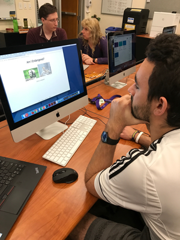
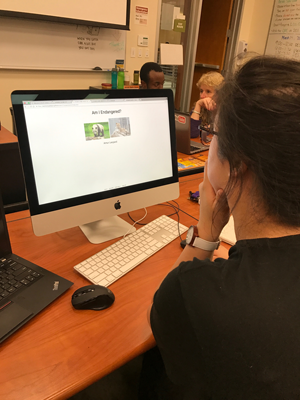

ISEA Audience Test Results


My first audience tester was a male and in the age group of my target audience. He is an alumni of UC Davis Design and has taken this clas before. He was able to give me some great contructive criticism and feedback on the functionality of my website.
He was able to understand and navigate the website easily, but would like to see all the images of relative same size. He understood the idea I was going for and offered some advice on what was feasible and made the most sense in terms of how
components of my website, such as the organization buttons I was planning to do, could be formatted and function better.
My second audience tester was a current design student at UC Davis. She was in the age roup of my target audience. She is a year below me, but also offered a lot of perspective and advice in working out my ideas. She suggested there was no need for
the organization buttons if I just automatically placed them in alphabetical order because she would be able to tell they were organized that way logically if she moused over every animal. She also suggested I size all the images the same as well.
She liked the idea that it was a quick way to lern info but challenged me to think more thoroughly on why would and should people come to my website and to make its purpose of being a quick, efficient, easy, and visual way to learn what you need
more apparent.